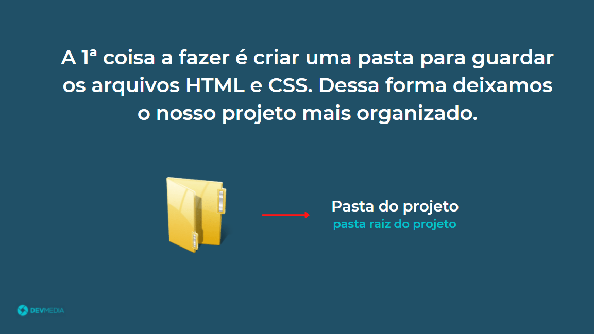
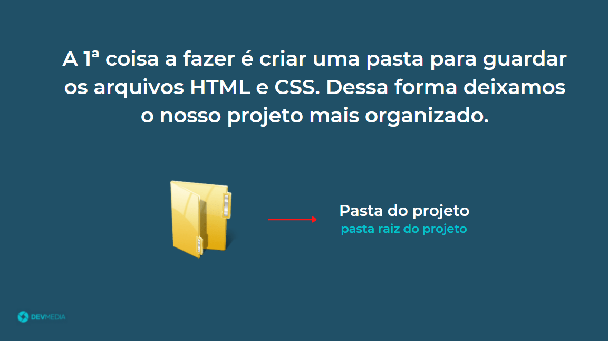

Vimos nas aulas anteriores que adicionamos CSS por meio da tag <style>.
No entanto, o mais indicado é aplicar o código de
estilo por meio de um arquivo CSS externo.
Na Figura 1 podemos ver uma estrutura básica de um projeto web. Temos um diretório que vai conter os arquivos que contém a estrutura e os estilos da nossa página.

 



<!DOCTYPE html>
<html>
<head>
<meta charset="UTF-8">
<title>Estrutura CSS</title>
<link rel="stylesheet" href="estilo.css">
</head>
<body>
<h1>Introdução ao CSS</h1>
<p>Aprenda o que é o CSS e como ele funciona. Comece a criar os seus primeiros estilos formatando elementos de texto. O CSS é uma linguagem fundamental para quem quer trabalhar com desenvolvimento web. Abaixo você tem o ponto de partida para o seu aprendizado.</p>
</body>
</html>
h1 {
font-size: 48px;
color: blue;
}
p {
font-size: 20px;
}
Quando usamos a tag <style> dentro do arquivo HTML estamos usando CSS incorporado (ou interno).
Já quando colocamos os estilos em um arquivo CSS separado estamos usando CSS externo.
<!DOCTYPE html>
<html>
…
<link rel="stylesheet" href="estilo.css">
…
</html>
No entanto, para casos em que o arquivo.css esteja salvo em outra pasta precisaremos utilizar uma sintaxe levemente diferente.
Vejamos mais detalhes no próximo flow:

Dividir o seu projeto em pastas é uma ótima prática, pois deixará os arquivos mais organizados. Isso facilita a alteração/evolução do código.
/* Link HTML */
<link rel="stylesheet" href="css/estilos.css">
}
Utilizar um arquivo CSS externo deixa a manutenção de um projeto mais fácil. Além de termos arquivos mais fáceis de manter, não temos todo o código (estrutura e estilo) misturado em um mesmo arquivo. É uma boa prática separar os códigos HTML e CSS em arquivos distintos, deixando cada arquivo com uma única responsabilidade